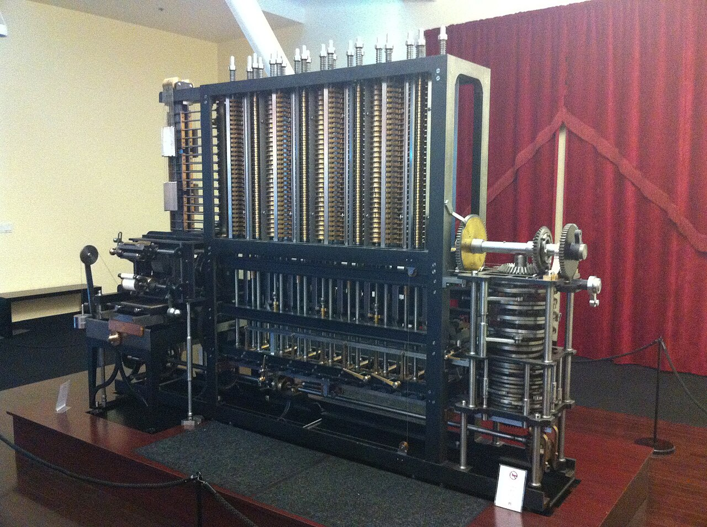

Scavenger Hunt: The Victorian Computing Engines
Welcome to the Mimms Museum's Victorian Computing Gallery. Today, you are a "History Detective." Your mission is to investigate the massive machines designed over 150 years ago that paved the way for the smartphone in your pocket. Follow the clues, check the boxes, and solve the riddles!
Part 1: The Heavyweight Champion
Clue 1: Find the largest brass and iron machine in this room. It has
a hand crank and stands taller than most of you!

Look at the placard next to this mechanical giant. How many individual parts make
up this machine?
Clue 2: This machine doesn't use a screen. It uses "Figure Wheels."
Look closely at the vertical columns of wheels. What is the maximum number of digits this machine can
handle?
Riddle: I am more than 30, but less than 32. What am I?
Part 2: The Victorian "Programmer"
Clue 3: Search for a portrait of a woman in a fine Victorian dress.
She was the first person to realize that these engines could do more than just math—they could create
music or art if programmed correctly.
Find the glass case containing her handwritten notes. What was the name of the
"instructions" she wrote for the Analytical Engine?
Part 3: Power and Precision
Clue 4: Find the "Hand Crank." Babbage wanted to use steam, but for
this display, we use muscle power! If you were to turn this handle, what three materials would you feel
or see moving?
Clue 5: Look for the "Printer" attachment. Babbage hated human
errors. Instead of writing numbers down, this machine "stamped" them into a tray. What animal does the
weight of this entire machine compare to?
Hint: It has a trunk!
Did You Know?
Babbage never saw his Difference Engine No. 2 finished. He died in 1871, but the machine wasn't fully built until 1991! Engineers used his original 150-year-old drawings to prove that his "mechanical brain" actually worked perfectly.
Sources for Your Research
- Science Museum Group. "Babbage's Difference Engine No. 2."
- Computer History Museum. "The Babbage Engine."
- Swade, Doron. The Difference Engine: Charles Babbage and the Quest to Build the First Computer. Penguin Books, 2002.